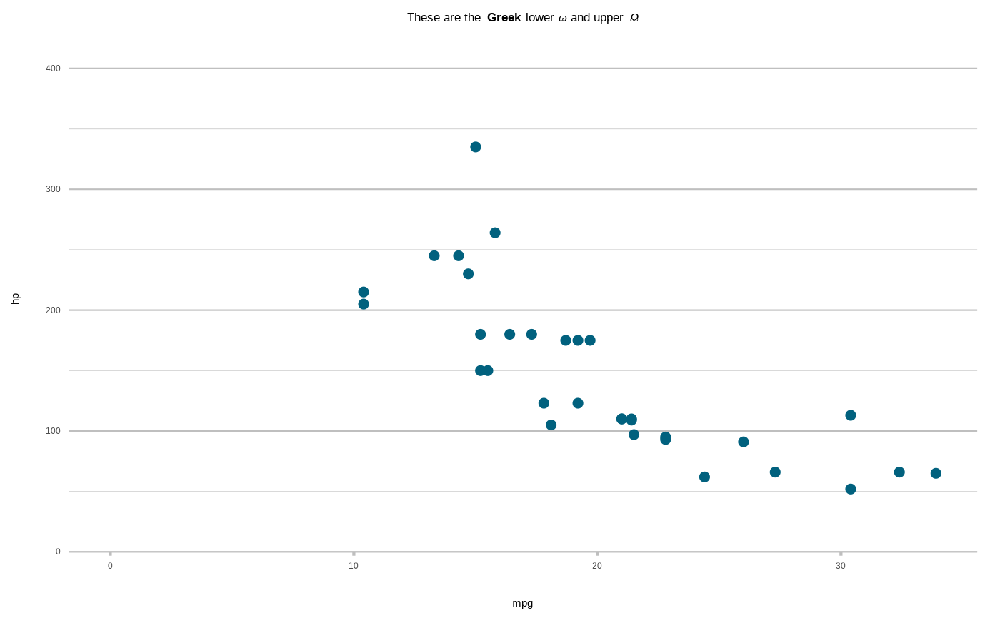
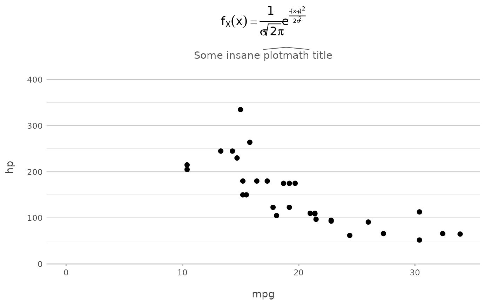

This function converts common markdown language to an R plotmath expression. plot2() uses this function internally to convert plot titles and axis titles.
md_to_expression(x)text to convert, only the first value will be evaluated
An expression
This function only supports common markdown (italic, bold, bold-italic, subscript, superscript), but also supports some additional functionalities for more advanced expressions using R plotmath. Please see Examples.
Rationale: we tried to use the ggtext package instead to support markdown using their element_markdown() function for ggplot2 themes, but it appeared to be incompatible with the showtext package to support different fonts. We subsequently developed this function to transform markdown into plotmath.
# use '*' for italics, not '_', to prevent conflicts with variable naming
md_to_expression("this is *italic* text, this is _not italic_ text")
#> expression(paste("this is ", italic("italic"), " text, this is _not italic_ text"))
md_to_expression("this is **bold** text")
#> expression(paste("this is ", bold("bold"), " text"))
md_to_expression("this is ***bold and italic*** text")
#> expression(paste("this is ", bolditalic("bold and italic"), " text"))
# subscript and superscript can never be preceded by a space.
md_to_expression("this is long<sub>subscripted text</sub>, this is short_subscripted text")
#> expression(paste("this is ", long["subscripted text"], ", this is ",
#> short["subscripted"], " text"))
md_to_expression("this is long<sup>superscripted text</sup>, this is short^superscripted text")
#> expression(paste("this is ", long^"superscripted text", ", this is ",
#> short^"superscripted", " text"))
# use $...$ to use any plotmath expression as-is (see ?plotmath):
md_to_expression("text $omega$ text, $a[x]$")
#> expression(paste("text ", omega, " text, ", a[x]))
mtcars |>
plot2(mpg, hp,
title = "These are the **Greek** lower $omega$ and upper $Omega$")
#> i Using type = "point" since both axes are numeric

mtcars |>
plot2(mpg, hp,
title = "$f[X](x)==frac(1, sigma*sqrt(2*pi))*plain(e)^{frac(-(x-mu)^2, 2*sigma^2)}$",
subtitle = "Some insane $widehat(plotmath)$ title")
#> i Using type = "point" since both axes are numeric
